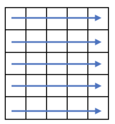
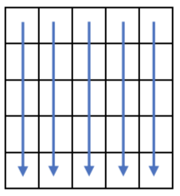

2014-B 問題:連鎖消滅パズル
問題の概要
h*5の大きさのマス目に1~9の数字が書かれた石が置いてある。この石は「横方向に」3つ以上並ぶと消え、消えた石の上にある石は落下してくる。これを繰り返した時、得られるスコアはいくつか出力せよ。
解説
まずは「3つ以上並ぶ」ことをどう検知するかですが、while(v[i][j]==v[i][j+1])のようにすれば隣り合う数字が同じという状態を得られるので、これをjを増やしながら行った結果、同じwhileの中で2回以上jが増えるかどうかで判定できます。下記のコードでは、このjが増えた回数をchainという変数で持っています。
さらに、この後石の落下処理をするにあたって、「この石はもう消えた」という情報を持っておく必要があるので、消えた石の数字は-1に変えます。消えたかどうかは上記の通り一度jを進めてみないとわからないので、消えたことがわかれば変数chainを使ってもう一度ループを回して-1を代入します。（消えるかどうかの検知と、 -1を代入する処理は同時には行えないということです。）
最後に落下処理ですが、「まだ消えてない石が落下する」と「すでに消えた石が上昇する」のどちらでもいいです。筆者は後者を選択しました。-1の石を見れば、一番上まで上げることをします。この処理に置いては、配列を縦に回します。ただし、1回この操作をしたところで全ての-1が上がりきらないので、h回この操作をすれば確実だろうということでh回行います。
これら一覧の流れを、消す石がなくなるまで続けます。
配列の回し方、横と縦
（ここで書くようはことではないかもしれませんが）これは筆者のすごく個人的な見解ですが、配列の回し方には横と縦があると思っています。
//横
int v[10][5];
for(int i=0;i<10;i++){
for(int j=0;j<5;j++){
v[i][j]の処理
}
}

本問では石を消す処理に使います。
//縦
int v[10][5];
for(int i=0;i<5;i++){
for(int j=0;j<10;j++){
v[j][i]の処理
}
}

本問では落下処理をするのに使います。
以上のことから、解答例は以下のようになります。
#include <iostream>
#include <vector>
using namespace std;
int main (){
int h;
while(cin>>h && h){
vector<vector<int>> v(h,vector<int>(5));
for(int i=0;i<h;i++)for(int j=0;j<5;j++)cin>>v[i][j];//入力
int ans=0;
while(1){
int flag=true; //消す石があったらtrueのまま
//以下、３個以上並ぶところを消す処理
for(int i=0;i<h;i++){
int chain; //同じ数字が並ぶ数
for(int j=0;j<5;j++){
chain=1;
while(j+1<5 && v[i][j]!=-1 && v[i][j]==v[i][j+1]){
chain++;
j++;
}
if(chain>=3){ //3つ以上並んでいたら
flag=false;
ans+=chain*v[i][j];
for(int k=0;k<chain;k++){ //その部分を-1に変える
v[i][j-chain+k+1]=-1;
}
break;
}
}
}
if(flag)break; //消す石が無かったなら終了
for(int p=0;p<h;p++){ //下記処理をh回行えば完璧に処理できるだろう
//以下は落下処理で、-1を上にあげるイメージ
for(int i=0;i<5;i++){
for(int j=h-1;j>=1;j--){
if(v[j][i]==-1){
for(int k=j;k>=1;k--)swap(v[k][i],v[k-1][i]);
}
}
}
}
}
cout<<ans<<endl;
}
}
トップに戻る